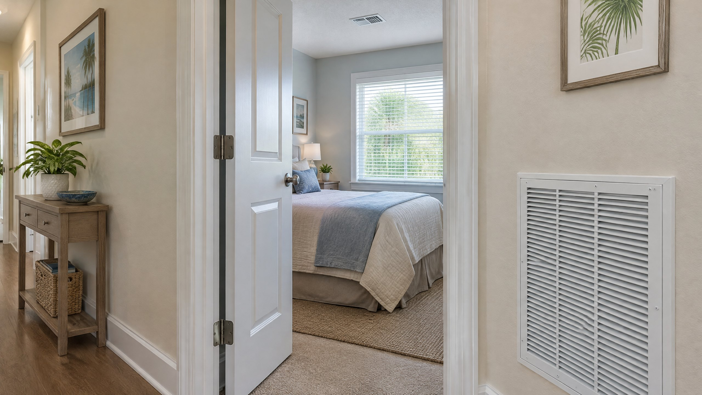

If a bedroom feels comfortable with its door open but warmer after the door closes, describe that pattern when arranging service. The change can be useful evidence about air circulation. It does not identify a failed part or establish that the entire AC needs replacing.
This article addresses that specific door-dependent complaint in a Tampa or North Tampa home with ducted cooling. It is not the same decision as closing supply vents in unused rooms. A door can interrupt the route back to a central return even while the bedroom's supply register remains open.
Cooling air needs a route into the room and back out
A supply register delivers conditioned air to a room. A return-air path lets room air travel back to the central air handler for recirculation. The two functions are different. A supply grille in the bedroom ceiling does not, by itself, establish that the room has an adequate return route when the door is shut.
DOE's ducted-return guidance explains that many houses collect return air at a centrally located grille, while others use dedicated room returns or a combination of return strategies.[1] With a hallway return, bedroom air must reach that hallway through some available path. An open doorway may provide a route that a closed door no longer provides.
A return path is not an outdoor-air inlet. It is part of indoor circulation. For the separate ventilation question, read whether central AC brings fresh air into a home.
Why can closing the door affect bedroom comfort?
If supply air enters a bedroom faster than it can leave through the available return path, the room can become pressurized relative to the hallway. The pressure difference can interfere with the intended circulation. Building Science Corporation describes how an inadequate bedroom return path can restrict supply flow; PNNL connects inadequate return pathways with drafts and room-to-room temperature differences.[2][3]
This is a possible explanation, not a diagnosis from the door position alone. A house with a properly designed dedicated return, transfer opening, or jump duct may maintain its intended airflow with the bedroom door closed. Not every closed bedroom door creates a comfort problem.
Does the gap under the door provide enough return air?
Do not assume so. A door undercut may contribute to a return path, but the visible gap does not show whether it can carry the room's required airflow. PNNL lists undercuts alongside dedicated returns, transfer grilles, and jump ducts; Building Science Corporation cautions against relying on undercutting alone to relieve bedroom pressurization.[2][3]
Flooring changes, rugs, or stored items can alter an existing opening. Notice obstructions from ordinary room access and report them. Do not cut the door, drill a wall, or enlarge a grille based on this article. Opening size and location should follow the home's airflow requirements and a suitable design, not a universal gap measurement.
What should you record before the appointment?
Observe the room during normal use rather than forcing repeated equipment starts or changing multiple settings at once. Note whether the comfort complaint changes with the door position while the thermostat and register settings remain unchanged. This comparison is a clue, not a calibrated pressure or airflow test.
| Observation | Useful detail to report |
|---|---|
| Door position | Whether the complaint appears or increases after closing the bedroom door |
| Visible openings | The bedroom supply, any separate return or transfer opening, and visible obstructions |
| Timing | Whether cooling is operating and whether direct sun or other room use changes at the same time |
| Other rooms | Whether the hallway remains comfortable or the entire home has changed |
| Recent changes | New flooring, a rug, furniture placement, or work affecting the doorway or ducts |
A sofa covering a return, furniture blocking a supply, or an obstructed transfer grille is worth reporting. Leave equipment cabinets closed and avoid attic or ceiling access to trace ducts. If the wider system is running without cooling, report that broader complaint too; it may require a different assessment.
What should a technician check with the door closed?
The assessment should consider the room's supply airflow and available return path together. PNNL recommends inspecting return pathways and testing room pressure differences when responding to uneven-temperature complaints in existing homes.[3] The door position that creates the complaint should be part of the evaluation.
Ask how the findings compare with the room's needs and intended equipment operation. No universal pressure threshold or grille size is supplied here. A program-specific new-construction target should not be presented as proof that every existing Tampa home needs the same retrofit.
The return route is only one possible contributor. The room's supply branch, duct condition, solar exposure, insulation, and overall equipment performance may also need evaluation. Opening the door and noticing improvement does not rule out these other conditions. Arrange an AC repair assessment when comfort has changed or operation is abnormal, rather than selecting a component or larger system from that observation alone.
What might an appropriate correction involve?
Depending on the findings, an existing return path may need attention, or the room may need a designed alternative. A dedicated return connects the room to the return system. A transfer grille connects the room with an adjoining area. A jump duct connects openings through a short ducted route. DOE and PNNL describe these alternatives, but listing them does not decide which belongs in your house.[1][3]
Ask about the intended air path, required room airflow, access, and any sound or light transfer. Building Science Corporation illustrates baffled transfer arrangements to address sound and light concerns.[2] The proposal should explain how the finished arrangement will be checked with the door closed.
If inspection identifies a damaged connection or leak, discuss the actual duct repair or duct sealing scope. Neither should be assumed to create a missing return path. The broader seal, repair, or replace ductwork guide covers that separate scope decision.
What should not become the permanent workaround?
Do not close other rooms' supplies to force more air toward the bedroom or keep lowering the whole-house thermostat to address one room. Those actions do not establish or correct the return route. Keeping a bedroom door open indefinitely is not a substitute for a circulation plan that supports normal closed-door use and privacy.
A useful recommendation identifies the actual problem, explains the proposed change, and includes verification. This article does not promise a particular temperature improvement, energy saving, or need for equipment replacement.
Frequently Asked Questions
Does a closed bedroom door always make the room warmer?
No. The result depends on the supply and return layout and any designed transfer path. A door-dependent comfort change is a reason to assess the room, not proof that every closed door restricts cooling.
Is the gap under my bedroom door enough for return air?
A visible gap does not establish adequate airflow. Its contribution depends on the room's needs and the other available return paths. Do not cut the door based on a generic measurement; have the actual arrangement assessed.
Will adding a return grille automatically fix the problem?
No. The grille must connect to an appropriate air path and be selected for the room's requirements. Supply, duct, room-load, or equipment conditions may also matter. The recommendation should follow findings and include closed-door verification.
Should I buy a larger AC for a bedroom that warms when closed?
Not from that observation alone. A larger system does not establish an adequate return path or correct a blocked or damaged branch. Assess room airflow and the existing system before deciding whether replacement is relevant.
Sources
[1] U.S. Department of Energy, Building Science Education: HVAC Ducted Returns. Return-air function and dedicated or combined return strategies.
[2] Building Science Corporation: Info-604: Transfer Ducts and Grilles. Bedroom return-path restrictions, undercut limitations, and sound/light considerations.
[3] Pacific Northwest National Laboratory: Jump Ducts. Pressure balancing, return-path options, and professional assessment of existing homes. Program-specific dimensions and pressure targets are not treated as universal retrofit instructions.
Editorial Source Review & Publisher
Prepared for On The Way Heating & Air from the federal, national-laboratory, and recognized building-science references above. This is general homeowner guidance, not a room diagnosis, duct design, installation instruction, or code determination. Dustin Miller began HVAC work with his father in 2006; that family-rooted background is company context, not a claim of a personal inspection.